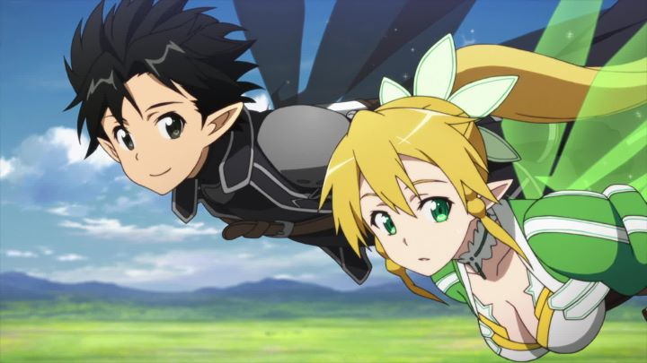

Disclaimer: This review covers Season 1 of "Sword Art Online" (episodes 1 - 25, arcs "Aincrad" and "Fairy Dance"), and the feature-length OVA "Extra Edition."If you watched anime in the 2010's decade, you've probably heard of the "isekai" genre, wherein the main character(s) from a modern-day real world are transported and stuck in a fantasy world that mirrors something out of a video game. The genre existed for a long time, but only became as popular as it was around the time the anime "Sword Art Online" was broadcast. It wasn't all that original either; the ".Hack" series predates it by about a decade. But it was a smash hit around the world, growing into a franchise of sequels and spin-offs. And with the real-world "Oculus Rift" virtual-reality headset, technology crowdfunded by the public, it was clear that the concept was more relevant than ever.The story takes place in a near future where VR is commonplace, including tech to override your senses for better immersion. A new online game called "Sword Art Online" is just released, with crowds of people waiting in line for a physical copy, and others taking the day off to play a digital copy at home. But early in the game, all players are locked in, unable to log out, and the game's creator announces the true intent of the world. No one can leave the game until it's beat, which means beating 100 floors of a dungeon and the final boss. Also, if you die in the game, it software kills your real body too. This death triggers if anyone tries to force you out of the headset. The game is real. I expected the show to cheap out of the premise, possibly to reveal at the end that this was all a lie. But no. Characters do die in the game, and they die for real. Nothing brings them back. Like most online games, it can't be beat in just a few days, and time doesn't pass any differently than real life. So the players are stuck, at first for days, then months, then years. In the real world, we get glimpses of how the incident made the news, how the victims are hospitalized and tracked until they wake up from the game. But only glimpses, as this was the story of the players, not the rest of the world. Players who are given no choice but to play, and effectively, to live entirely new lives in this digital space of sky castles and magic swords. Believe it or not, this comes across as a horror show for much of it. Even with the superhuman strength players are granted, death is a real threat, and monsters are vicious. Even worse are the players themselves, some of whom doubt the dangers, and proceed as they normally might in an MMO, killing other players or sabatoging for the fun of it. Yeah, online people are jerks. At the center is Kirito, a beta-tester who got stuck with the rest of the day-one players. More experienced than the others, he quickly gets ostracized for the unfair advantage, and later experienced the danger first-hand when he sees members of a small team die in front of his eyes. This leads him to decide to be a solo-player, playing the part of a dark personality, not wanting to go through the emotional trauma again. Second to him is Asuna, a rookie player with mad fighting skills, herself quickly rising the ranks of a in-game team working to beat SAO. As days turn to years, the urgency of the show dimishes a little, with the overlooming threat of death remaining. At first, each episode tells a few different stories, seemingly unrelated, of the other players Kirito meets. Kirito and Asuna meet a few times, and partner up a few times as well, a relationship growing from annoyed acquaintances, to friends, to lovers. Yes, lovers. They get married, buy a house together, and even raise a kid (sort of). All in game, of course. They hadn't yet met in real life, or even know each other's real names.Being a viewer, I was a little annoyed to see so much time pass (and no explaination to things like how their real-world bodies pee while strapped to a computer for over two years). The first season also kinda cheaps out at the end, rushing to the "final boss" in the final episodes, and giving a poor explanation as to why a software developer would risk the lives of thousands of players like this. But the stories are intense and dramatic, with enough character development to remain invested. Both Kirito and Asuna are strong but complicated characters, and their relationship felt more pure, developed and respectful than most anime bothers to render. That first arc is a satisfying, if typical, example of the genre that other shows should strive for. I didn't even mind that Kirito, the hero, was so overpowered and unlikely to die. ... this is all regarding "Aincrad," the first arc, which takes about 15 episodes. Technically, the second arc, "Fairy Dance," is part of this first season, and requires some spoilers to talk about. So... SPOILERS. You've been warned. The pair manage to survive and beat SAO, and Kirito wakes up, skinny and pale in a hospital bed. But Asuna, mysteriously, remains asleep. Kirito learns that a company bought out SAO's software and transposed it into a new MMO, featuring fairies and magic instead of swords, and that Asuna might be locked inside it, at the top of a new dungeon. Not only is Asuna reduced to being a literal "damsel locked in a tower" instead of her strong persona, but to further impose urgency, the director of the new software company, a "family friend," is preparing to marry Asuna in a week, without her permission, with thanks from her father in exchange for keeping her alive. This second antagonist is horrid, and makes it clear that he has every intention to make Asuna his, through rape if necessary. And rape is a threat. Constantly. Both in real life and in-game, where the director maintains a role of the Elvish King, and Asuna his locked-up queen in a birdcage.  This was difficult enough to watch that I wanted to skip any scene that had Asuna in it, knowing she'd consistently be subjected to rape, either threatened, or occuring barely off-screen. Throw in a few other knots: after learning she's a cousin and not Kirito's real sister, Suguha struggles with her feelings of (sexual) love to her big brother, while not realizing that she's become an ally to a similar-looking player in the fairy MMO. Also, Kirito still has access to his "daughter" from SAO, an A.I., who acts as a cute fairy NPC with helpful information, and constantly refers to Kirito as "daddy." Gross. Yes, this has all appeared in anime before: rape is not an uncommon story-device, and romance between distant cousins is not considered unusual in Japan as it might be elsewhere. But this second arc was gross nonetheless. And even in the best of it (Suguha's arc in particular was well handled, all things considered), it was all unnecessary. It's inclusion felt perverse, with additional fanservice that wasn't really present in the previous arc. Upon broadcast, this story arc was controversal, and rightfully so. It's a shame, since the new world is otherwise distinct and interesting, even if the show doesn't really get enough time to flesh out the cultures and dynamics of it (Kirito only has a week after all, not a couple years, so no time to waste on world-building). All in all, I'm willing to overlook those issues in the second arc of "Sword Art Online" to accept the strengths of the series as a whole. But it's difficult to ignore, and will turn off a lot of viewers, and rightfully so. In addition to story, "Sword Art Online" benefits from good direction and production values. The character designs look great, taking advantage of the fantasy-video-game setting, while also being well-suited to commercial merchandise and so on (a common limitation in commercial anime, but they did what they could here). The world is brightly colored and appealing. Animation during fight scenes is pretty fantastic, energetic and flashy, with clear love and attention from A-! Pictures to the craft. However, that's only during key battles, and makes up about two-minutes-worth of the entire runtime total. It's in stark constrast to the rest of the animation, which is workman-like, decent, but underwhelming. Not horrible, but disappointing to the best of it. Music was composed by Yuki Kajiura, a popular composer after her work on "The Garden of Sinners" and 2011's "Fate-Zero." I like her work, but as good as the orchestral violins and chants are here, it felt too similar to her previous stuff, distractingly so. Despite this, the two MMO's each have a distinct tone in the music, and overall, the music is worthy of buying the soundtrack for. On top of that, the opening and ending vocal songs are among the best I've heard in anime. Aniplex USA released the series in the US, and if you waited, they eventually released a compiled DVD and Bluray set at a more reasonable price than they normally do. Their English dub is pretty good too (Kirito's voice got on my nerves a little, but everyone else was solid, and their emotional delivery is on point). Bonus points for a great English translation, complete with appropriate online gamer slang. They even included "Sword Art Online - Extra Edition," an OVA that's... 1 hour and 40 minutes long?!? Yep, it's practically a full-length movie, but is really just a recap film with some extra scenes of the girls learning to swim in their swimsuits in the real world, plus a little extra context of an investigation around what exactly happened in these virtual worlds, leading into season 2. It's wholly unecessary, not particularly fun or interesting, and doesn'y even satisfy fans excited for bikinis, but... it's there. "Sword Art Online" makes some stupid choices in its story, and it's premise is broad enough that it probably won't ever end. Kirito will probably be the hero of each story, screaming as he swings his magical sword at his foes, with no risk of dying if the author has anything to say about it. But the show is popular for a reason, and deserves credit for popularizing a genre, as iconic as "Madoka Magica" was for dark-fantasy-magical-girl anime. Honestly, if you only watch one isekai show, I'd still recommend "Sword Art Online." It might not be the best, but it's good, and is influencial, and makes you part of a large existing fanbase.
- "Ani" More reviews can be found at : https://2danicritic.github.io/ Previous review: review_Suzume Next review: review_Sword_of_the_Stranger